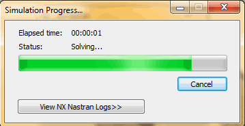
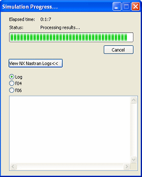

Simulation Progress dialog box
The Simulation Progress dialog box is displayed when you choose the Solve command. It displays the status and elapsed processing time for the analysis study.

- Elapsed time
-
Shows the amount of time that has passed since simulation processing began. The format is hours:minutes:seconds.
- Status
-
Displays the NX Nastran solution processing status.
-
Initializing
-
Solving
-
Errors—Processing complete, but errors found. Click the View NX Nastran Logs button to display details.
If processing stops due to errors, the NX Nastran Solve Error dialog box is displayed. This shows the first error encountered, and provides a brief description of how to correct the problem.
-
Stopped—Processing stops before completing when you click the Cancel button.
-
Complete—Processing finished without errors.
The results are displayed in the Simulation Results environment automatically.
-
- View NX Nastran Logs
-
Select the View NX Nastran Logs button to expand the dialog box to display the NX Nastran processing information.
You can display the contents of different output files by selecting these option buttons: Log, f04, f06.

- Log
-
This is the default option. It contains system environment information for running NX Nastran and for file linking.
- f04
-
The .f04 file contains information about the files accessed, disk space, modules used, and more. This file is useful for debugging.
- f06
-
In general, processing errors are written to the ASCII .f06 file. Select this option to display a list of NX Nastran processing errors.
Note:After processing, you can reopen the .log, .f04, and .f06 files in the NX Nastran Log Viewer using the View tab→Show group→Panes
 →NX Nastran Log Viewer command. This displays the most recent processing results for
the active study in a docking window at the right side of the application window.
→NX Nastran Log Viewer command. This displays the most recent processing results for
the active study in a docking window at the right side of the application window.